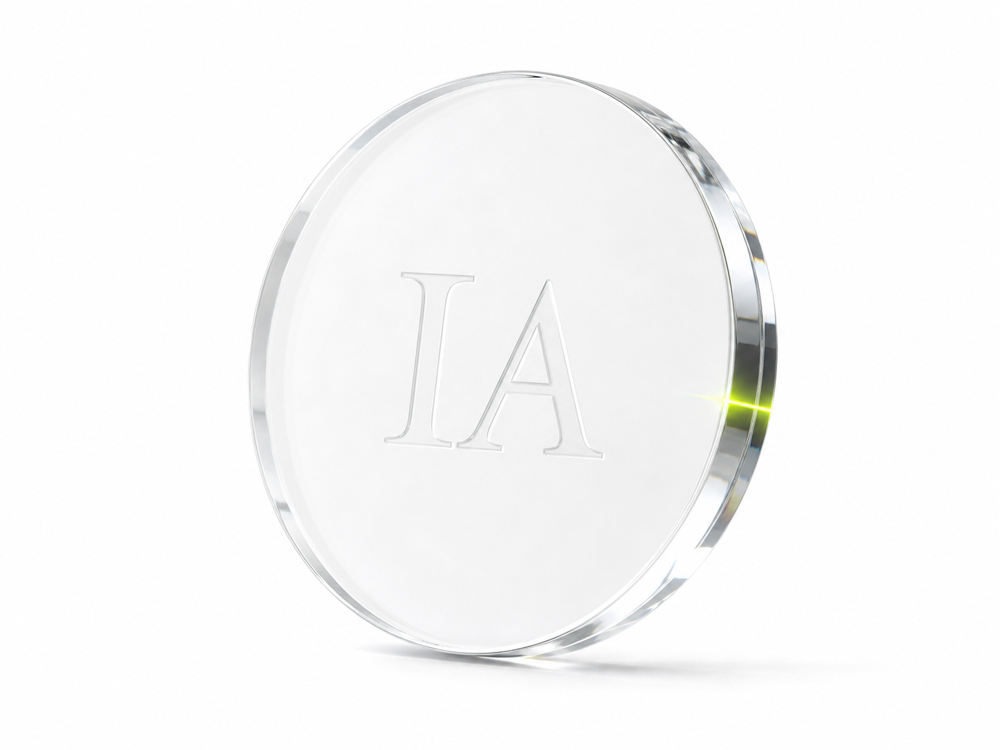
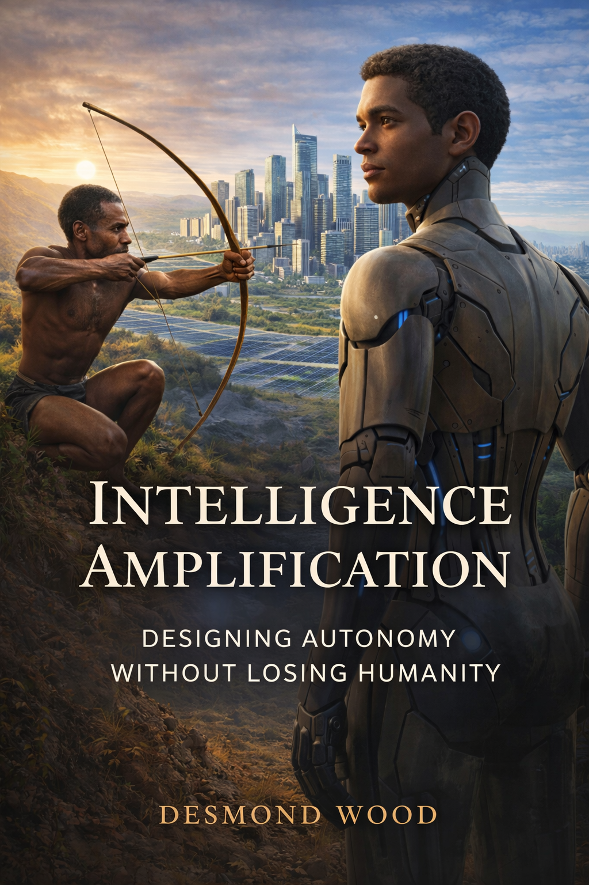

GPT-6 Astra
On ARC-AGI-3, OpenAI reports Astra exceeded the human action-efficiency baseline on 96% of levels.
Read the evaluation ↗Expanding what people can organize, create, and accomplish with frontier AI agents.
A human-centered framework for intelligence organization, income generation, and economic agency.

01 / Premise
Artificial intelligence is a technical, institutional, and human transition. The work is to extend capability without diminishing judgment, agency, or responsibility.
The frontier / Evidence of progress
From Large Language Models (LLMs) to Large Reasoning Models (LRMs). Frontier models now reason through complex problems; paired with tools, that reasoning enables agentic models to plan, act, and verify work across computers, documents, and code. Scale tells part of the story. What people can accomplish tells the rest.
“Large Reasoning Model” describes a reasoning-focused language model, not a replacement for the language-model foundation. OpenAI’s o1 research (2024) documents gains from reinforcement learning and inference-time reasoning. OpenAI’s o3 and o4-mini release (2025) documents reasoning models trained to decide when and how to use tools. Reasoning, tools, and orchestration together support agentic behavior.
Historical snapshot · Evidence reviewed 7 October 2026 · Selected milestones · estimates are not disclosures
Selected milestones, from 2018 to the present.
A chronological selection of GPT milestones and current frontier contenders. Parameter counts describe scale, not intelligence. Dates link to model announcements; evidence links identify the source of each count.
Parameters · log₁₀ axis · 100 million to 100 trillion
| Date | Model | 100M1B10B100B1T10T100T | Total | Active / token | Evidence |
|---|---|---|---|---|---|
| Jun 2018 | GPT-1 | 117M | — Dense | Disclosed | |
| Feb 2019 | GPT-2 | 1.5B | — Dense | Disclosed | |
| May 2020 | GPT-3 | 175B | — Dense | Disclosed | |
| Mar 2023 | GPT-4 | ~1.8T | ~280B | Independent estimate | |
| May 2024 | GPT-4o | ~200B | ~10B | Independent estimate | |
| Feb 2025 | GPT-4.5 | ~4.5T | ~225B | Independent estimate | |
| Aug 2025 | GPT-5 | ~3T | ~150B | Independent estimate | |
| Jul 2026 | GPT-5.6 Sol | ~5T | ~150B | Independent estimate | |
| 1 Sep 2026 | Claude Fable 5.1 | ~10T | ~150B | Independent estimate | |
| 3 Sep 2026 | GPT-6 Astra | ~10T | ~250B | Independent estimate | |
| 21 Sep 2026 | Grok 4.7 | ~2.1T | ~105B | Independent estimate | |
| 22 Sep 2026 | Claude Opus 5.5 | ~3T | ~150B | Independent estimate | |
| 29 Sep 2026 | GPT-6.1 Sol | ~2.5T | ~150B | Independent estimate | |
| 30 Sep 2026 | Gemini 4 ArgonRestricted access | ~6T | ~150B | Independent estimate |
Equal horizontal distances represent tenfold changes. No curve is fitted between models. M = million; B = billion; T = trillion.
Fable 5.1’s date is confirmed in Anthropic’s release listing. GPT-5.6 Sol uses its July general-release milestone. Argon was announced for restricted access, rather than a general public release.
Scaling / Reasoning / Agency
In Situational Awareness (June 2024), Leopold Aschenbrenner forecast rapid capability gains by combining more compute, algorithmic efficiency, and the transition from chatbots to agents. His intelligence-explosion essay argued that automated AI research could accelerate progress further. The book’s reference figure plots estimated effective compute normalized to GPT-4, with a separate future projection. Its school-age analogies are illustrations, not intelligence measurements. This table reports parameter counts, a different quantity; neither is a direct measure of human-equivalent ability.
Empirical scaling laws relate model loss to parameters, data, and compute. Reasoning adds another scaling dimension: training and inference-time compute. The expansion in parameter scale shown here is consistent with rapid growth in the selected evidence; it does not establish a guaranteed vertical takeoff in intelligence, or a one-to-one link between size and capability.
Read the evidence. GPT-1–3 counts are published model sizes. Later counts and MoE architectures are independent estimates, not lab disclosures. “~” means estimated. Actual frontier counts remain undisclosed; the plotted numbers are independent centrepoint estimates, not confirmed sizes. No extrapolations or invented counts are plotted. Models without a verifiable count or sourced estimate would be listed as unknown, outside the numeric axis.
Total ≠ active. Total includes every expert’s weights; active is the subset used per token. For dense models, the chart shows the total only. The default logarithmic axis spans 100 million to 100 trillion; the optional linear view spans 0 to 12 trillion. All rows use the same axis. Each point is a separate disclosed value or sourced estimate, with no connecting growth curve. Dense models show no separate active count. An unavailable count would appear as “Unknown,” with no point plotted.
Sources & estimates. Dr. Alan D. Thompson’s Models Table (public rows, retrieved 7 Oct 2026) supplies the later estimates, including Grok 4.7 and Gemini 4 Argon. LifeArchitect’s GPT-4 analysis supplies ~1.8T total / ~280B active from reported architecture leaks. The estimation methodology combines pricing, capability, infrastructure, open-model comparisons, and lab signals. Centrepoints have substantial uncertainty; no model-specific confidence intervals are available in the public table. These are not statistical error bars.
GPT-1: 117M (OpenAI’s released model); GPT-2: 1.5B (OpenAI, 2019); GPT-3: 175B (OpenAI, 2020). The largest original GPT-2 and GPT-3 variants are shown.
The public portions of The Memo, 12 Sep 2026 and The Memo, 28 Sep 2026 document emerging computer-use and knowledge-work examples. They inform the context here, not parameter counts or benchmark scores. Paywalled sections were not used. Model size alone does not establish capability.
Three forms of work. Separate measures. Visible limits.
Computer use / CUA
OSWorld · partial reward
OpenAI · max effort · gap to Astra
Claude Fable 5.1, Opus 5.5, Grok 4.7 & Gemini 4 Argon: —
Comparable 2.0 measurements unavailable.
Max effort · absolute partial reward
The two lanes are incompatible. Do not rank across them. The 2.0 lane plots OpenAI’s published relative gap; no absolute scores are inferred.
General knowledge work
GDPval-AA v2.1 · Elo
Artificial Analysis · common evaluation suite. Elo is a relative preference rating, not a percentage. Axis begins at 1,000.
Coding
Terminal-Bench 4.0 · success rate
Artificial Analysis · same benchmark version and publisher. Rounded percentages as published. No launch-chart scores are mixed into this panel.
Compare configurations, with care. Knowledge-work and coding results use Artificial Analysis’s reported configurations: GPT-6 Astra and GPT-6.1 Sol at high effort; Claude Fable 5.1 and Opus 5.5 at max, default fallback; Grok 4.7 at xhigh. These share a publisher and benchmark version, but are not equal-compute or equal-cost runs. Claude scores measure a deployed system that may delegate refused tasks to fallback models, not the named model alone. Effort labels are not equivalent between labs. Small margins should not be interpreted as meaningful without uncertainty estimates, which the cited comparison tables do not supply.
Computer-use conditions. OpenAI reports the Sol–Astra gap at max effort on OSWorld 2.0’s offline v2026.08.08 set. Anthropic reports OSWorld 2.1 at max effort with production safeguards and default fallbacks. Version, task set, harness, and fallback differences prevent a numerical ranking across these lanes. Grok 4.7 and Gemini 4 Argon have no compatible public OSWorld result in the cited sources. A dash denotes an unavailable compatible result, never zero. These task-specific results document progress in computer use and coding. They do not establish superiority to most humans, equivalence to an expert engineer, or general workplace autonomy.
Sources. OpenAI: GPT-6.1 Sol evaluation; Anthropic: Opus 5.5 evaluation and conditions; OSWorld benchmark publisher. Common-suite results: Artificial Analysis comparisons for Astra high, Sol high / Fable 5.1 max, and Sol high / Opus 5.5 max; publisher methodology. Grok 4.7 xhigh. Retrieved 7 Oct 2026. Gemini 4 Argon’s restricted-access announcement does not supply results in this common suite. The Astra page’s Sol-low column is not used.
| Model | OSWorld 2.0 max | OSWorld 2.1 max | GDPval-AA v2.1 | Terminal-Bench 4.0 |
|---|---|---|---|---|
| GPT-6 Astra | Astra reference | Unavailable | 1485 Elo | 54% |
| GPT-6.1 Sol | −2.1 pp vs Astra | Unavailable | 1486 Elo | 52% |
| Claude Fable 5.1 | Unavailable | 80.7% | 1758 Elo | 52% |
| Claude Opus 5.5 | Unavailable | 81.8% | 1866 Elo | 60% |
| Grok 4.7 | Unavailable | Unavailable | 1715 Elo | 26% |
| Gemini 4 Argon | Unavailable | Unavailable | Unavailable | Unavailable |
More capable systems. An open field of contenders.
Conceptual schematic · unmeasured scenarios, not a quantitative forecast
Potential scope of useful work ↑ Qualitative, unmeasured
Future model generations → No calendar timetable
Direction, not prediction. These paths illustrate compounding progress, slower progress, or a plateau. Their slopes and spacing have no numeric meaning or assigned likelihood.
Seven years of progress. The next chapter is still unfolding.
Preschooler
Elementary
schooler
Smart high
schooler
Expert-levelon selected tasks
Expert-levelon selected tasks
Expert-levelon selected tasks
The next
frontier
Progress over just seven years · 2019–2026.
Where are you on this line?
Adapted and extended from Leopold Aschenbrenner’s
Situational Awareness (2024).
Intellectual levels are illustrative analogies, not measured IQ scores. Today’s models perform unevenly across tasks; the shared label does not imply equal capability. Spacing is schematic.
On ARC-AGI-3, OpenAI reports Astra exceeded the human action-efficiency baseline on 96% of levels.
Read the evaluation ↗Anthropic reports advances in coding, professional knowledge work, and research capabilities.
Read the evaluation ↗Anthropic reports gains in expert evaluations, coding, and long-running agent work.
Read the evaluation ↗These are publisher-reported results, not a common test of general intelligence. The preceding capability figure provides benchmark-specific comparisons. The open-ended continuation assigns no score or arrival date to future models.
The next question is human.
What becomes possible when this intelligence is put to work with judgment?
02 / The Framework
An ongoing inquiry into whether AI progress translates into greater human capability. These three benchmarks guide the inquiry; documented outcomes will show how far the promise is being realized.
Own problems. Direct intelligence. Verify outcomes. Build relationships. Create economically valuable things.
AI can help organize scattered knowledge, ideas, goals, priorities, and attention. The benchmark is how reliably that support becomes coherent plans, decisions, systems, and finished work. Guidance helps people put this capability into practice.
Can an agent help a person earn legitimate new income, from first dollars to repeatable monthly revenue? This remains a possibility to test and document, with outcomes that depend on the person, the work, and the market.
Highest-level benchmark
How much does an agent expand the range, quality, and economic value of actions a person can successfully undertake? This overarching benchmark encompasses organization and income generation, and asks whether new capabilities hold up in practice.
“How much faster can AI help a worker perform an existing task?”
“What valuable things can this person now accomplish that were previously outside their effective capability?”
The real benchmark
03 / In Practice
Two working applications that make the framework tangible.
A contemplative application that transforms principles of attention, awareness, intention, and conscious respiration into a direct interactive experience.
A language-learning application that uses native-language anchors and supporting languages to reveal how new language structures are built.
04 / The Work
Recent keynote / CAISCEN
“Are we becoming more or less capable as we continue to use more powerful AI?”Watch the keynote ↗

05 / The Living Book
An evolving public text for thinking clearly about intelligence, tools, institutions, and the futures they make possible.
Enter the Living Book06 / Contact
For keynotes, workshops, and advisory conversations.
Start a Conversation